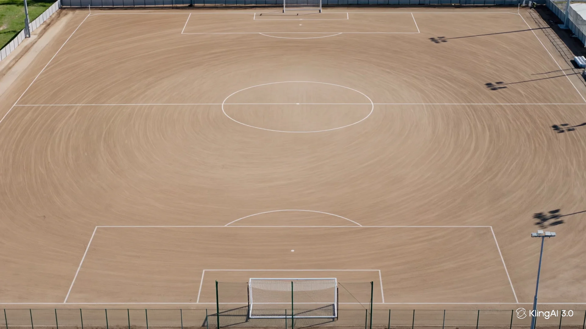
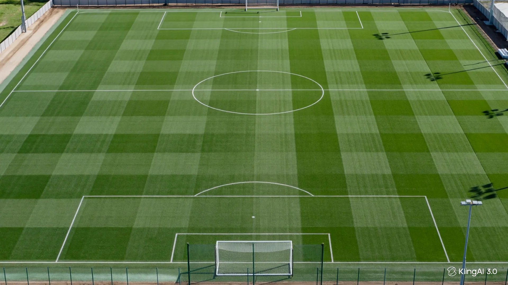

25 años · +1.000.000 m² instalados
Desliza para ver cómo una cancha de tierra se convierte en una superficie de grado profesional.
“
El tiempo es el juez más honesto del trabajo bien hecho.
Un campo no se mide por cómo se ve el día que se entrega, sino por cómo está el día que ya nadie recuerda quién lo instaló.
Cada proyecto empieza por un diagnóstico honesto del uso real, el presupuesto viable y el resultado esperado.
Grama sintética, caucho, arena de sílice, cerramientos y bases que cumplen el estándar que la palabra calidad debería significar.
Cada cancha, patio o escenario se diseña e instala según su uso real — no según un catálogo genérico.
Desde la decisión hasta el mantenimiento, con la misma seriedad para quien llega dudando y para quien llega decidido.
El resultado se juzga años después de la inauguración — cuando ya nadie recuerda quién lo instaló.
Como distribuidor e instalador autorizado de CCGrass en Colombia, trabajamos con grama sintética reconocida por las federaciones deportivas más exigentes del mundo.
CCGrass, el fabricante de la grama que instalamos, es Proveedor Preferido FIFA, con canchas certificadas bajo los estándares FIFA Quality y FIFA Quality Pro.
CCGrass es Proveedor Preferido de la Federación Internacional de Hockey (FIH), con superficies fabricadas bajo su exigente estándar de calidad.
Certificaciones otorgadas a CCGrass como fabricante del material. Total Campos es su distribuidor e instalador autorizado en Colombia.
Arrastra para comparar el mismo escenario.


Diagnóstico de uso, presupuesto y resultado esperado antes de recomendar cualquier material.
Escenarios deportivos, recreativos y decorativos diseñados para su uso real.
Grama sintética, caucho, arena de sílice, cerramientos y bases — grado profesional.
Porque el resultado se mide en cómo luce el campo años después, no el día de la entrega.
Cuéntanos qué escenario tienes en mente y empecemos por entenderlo.
Solicitar asesoría